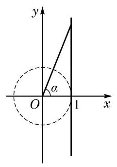
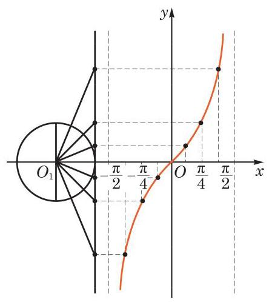
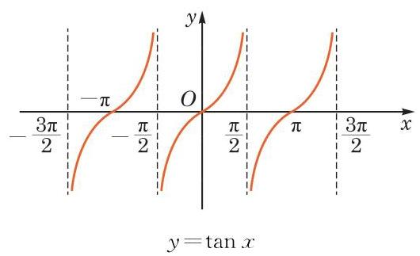
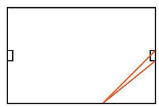

下面我们探讨正切函数的图像和性质.
1 正切函数的图像

图 7-4-1
我们知道,正切值 可以用角 的终边所在直线与直线 的交点的纵坐标表示(图 7-4-1).
类似于作正弦函数图像的方法, 利用单位圆并结合描点法我们可以作出 的大致图像 (图 7-4-2).

图 7-4-2
因为 ,所以函数 当 时的图像与 , 的图像形状一样,只需将后者图像的位置向右平移 就可得到; 同理,函数 当 , 时的图像与 的图像形状也一样,只需将后者图像的位置向左平移 就可得到. 这样,就可以得到函数 的整个图像 (图 7-4-3).

图 7-4-3
因为 的定义域是 , 其图像由无穷多支曲线所组成,它们被直线 , 即 所隔开.
2 正切函数的性质
(1)周期性
由诱导公式 可知,正切函数是周期函数, 均是它的周期, 是它的最小正周期.
(2) 值域
由正切函数 的定义可以得到,正切函数 的值域是实数集 ,它既没有最大值,也没有最小值.
(3) 奇偶性
由诱导公式 可知,正切函数 是奇函数. 因此, 其图像关于坐标原点对称.
(4) 单调性
由于正切函数是以 为最小正周期的函数,可以先在区间 上研究正切函数的单调性.
对于区间 中的任意给定的满足 的实数 ,有
由 ,易知 . 于是 , ,且 .
由上式就有 ,即 ,从而正切函数 在区间 上是严格增函数.
又因为正切函数是以 为最小正周期的周期函数,所以正切函数 在区间 上是严格增函数.
例题 1
答案与解析收起 / 展开
解 由正切的定义,该函数的自变量 满足 ,即 . 所以,该函数的定义域为
由正切函数的单调性可知,当 时,即 时,函数 是严格增函数.
因此,函数 的单调增区间是 , .
例题 2
答案与解析收起 / 展开
解 记 ,有
可知函数 的一个正周期 .
此外, 也是函数 的最小正周期. 事实上, 令 ,原来的函数可改写为 ,其以 为自变量的最小正周期为 . 返回到 变量,因 ,故原来函数的最小正周期为 .
练习 7.4
练习7.4 · 1
答案与解析收起 / 展开
练习7.4 · 2
- 比较下列各组数的大小, 并说明理由:
(1) 与 ; (2) 与 ；
(3) 与 .
答案与解析收起 / 展开
练习7.4 · 3
答案与解析收起 / 展开
探究与实践
球门的张角问题
某国际标准足球场长 、宽 ,球门宽 . 当足球运动员沿边路带球突破时, 距底线多远处射门, 对球门所张的角最大?

习题 7.4
A 组
习题7.4A · 1
答案与解析收起 / 展开
习题7.4A · 2
答案与解析收起 / 展开
习题7.4A · 3
- 求函数 的最大值和最小值,并指出使其取得最大值和最小值时所有 的值.
答案与解析收起 / 展开
- 函数 的最大值为 1,此时 ; 最小值为 ,此时 .
习题7.4A · 4
- 判断下列函数的奇偶性, 并说明理由:
(1) ; (2) ；
(3) ； (4) .
答案与解析收起 / 展开
4.(1)奇函数. (2)偶函数. (3)奇函数. (4)偶函数.
习题7.4A · 5
答案与解析收起 / 展开
B 组
习题7.4B · 1
答案与解析收起 / 展开
习题7.4B · 2
答案与解析收起 / 展开
习题7.4B · 3
答案与解析收起 / 展开